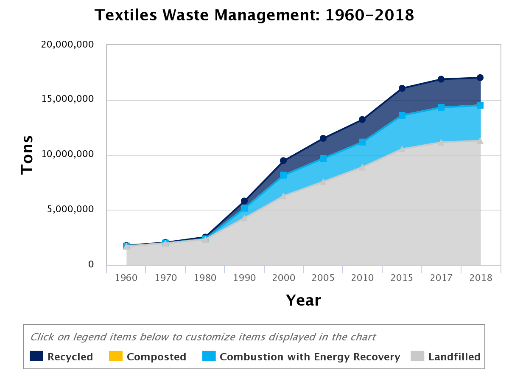

Learn why you should try trading your items
In the past 20 years, clothing production has approximately doubled
due to higher demand from a growing middle class around the world.
Meanwhile, garment usage lifetime has decreased on the consumer side.
This embodies the “fast fashion” phenomenon: more options, quicker
trend turnaround, lower prices, and unpriced damage to the
environment.
Most shocking in the graph is the decrease in clothing
utilisation: 36% globally. China saw a whopping 70% decrease over the
same time period, and 60% of German and Chinese citizens admit to
owning more clothes than they need. The picture varies from location
to location, with Europeans usually spending more on fewer items each
year, while Americans or Chinese buy far more pieces per person.
Earth.org
More info here

Why is it so important ?
The way people get rid of unwanted clothes has also changed, with items being thrown away rather than donated. Less than half of used clothes are collected for reuse or recycling, and only 1% of used clothes are recycled into new clothes, since technologies that would enable clothes to be recycled into virgin fibres are only now starting to emerge. Europeans use nearly 26 kilos of textiles and discard about 11 kilos of them every year. Used clothes can be exported outside the EU, but are mostly (87%) incinerated or landfilled.
